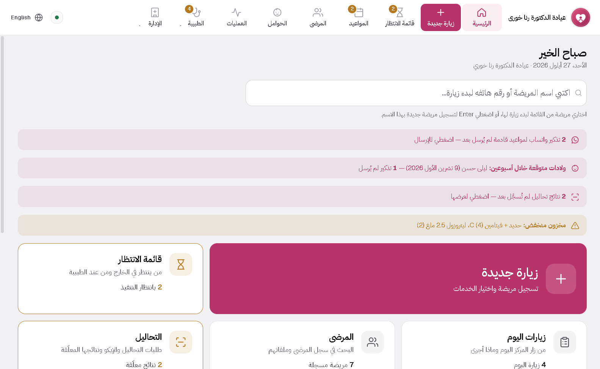
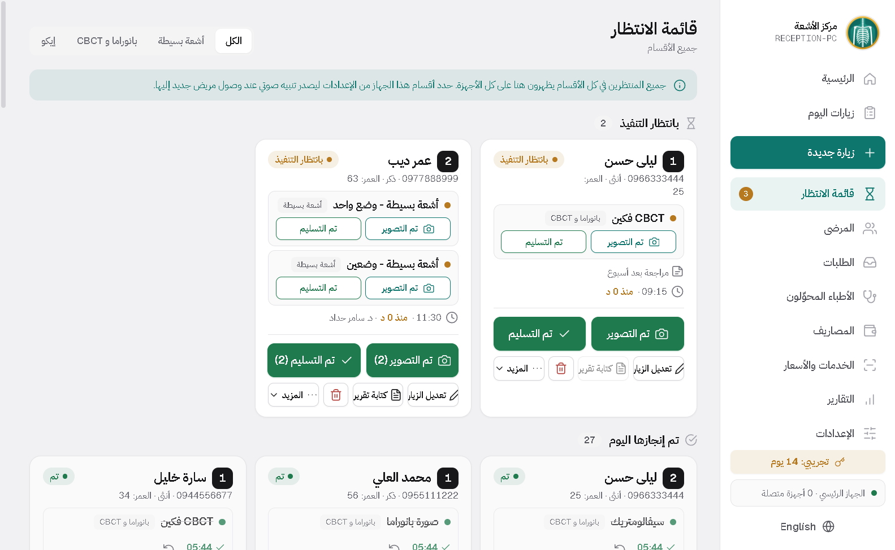

برنامج لعيادتك، يعمل حتى لو انقطع الإنترنت
أربعة برامج للعيادات ومراكز الأشعة. بياناتك تبقى على جهاز العيادة، والترخيص بدفعة واحدة.

لكل اختصاص برنامجه
كل برنامج مبني على أوراق اختصاصه، وليس قالباً عاماً واحداً.

أسنان
من الموعد إلى الإيصال: مخطط أسنان واقعي، جلسات وعمليات، مخبر، أشعة وأقراص CBCT، ووصفات بترويسة عيادتك. على الكمبيوتر والتابلت.
التفاصيل والتحميل
جاينو ديسك

بطاقة المشاهدة النسائية والولادية بنفس حقول ورقتك، متابعة الحمل وموعد الولادة، تحاليل وإيكو، عمليات وأتعاب، وأرشيف بطاقاتك الورقية القديمة.
التفاصيل والتحميل
كلينك ديسك

لعيادات الداخلية والأطفال والجلدية والعظمية والعصبية والعينية والأذنية وغيرها: غرفة انتظار، وصفات وطلبات تحاليل وأشعة، علامات حيوية وتنبيهات الحساسية.
التفاصيل والتحميل
راي ديسك

دور عمل لكل قسم على جهازه، أطباء محوّلون، صور وتقارير في ملف المريض، ومصاريف وتقارير أرباح. يعمل على شبكة المركز فقط.
التفاصيل والتحميلثلاثة أشياء تجعله مختلفاً
يعمل بدون إنترنت
كل شيء يجري على جهاز العيادة. لا سحابة، ولا حساب، ولا انتظار اتصال.
بياناتك تبقى عندك
ملفات المرضى لا تُرفع إلى أي مكان، والنسخ الاحتياطية بيدك أنت.
دفعة واحدة، بلا اشتراك
ترخيص دائم. لا رسوم شهرية، ولا برنامج يتوقف لأن الاشتراك انتهى.
التركيب يستغرق دقيقتين
لا تحتاج خبرة تقنية. حمّل الملف، شغّله، وافتح البرنامج.
نزّل الملف
اضغط زر التحميل في صفحة البرنامج. الملف ينزل إلى مجلد التنزيلات.
شغّل ملف التركيب
اضغط عليه مرتين. إذا ظهرت رسالة من ويندوز، اختر «مزيد من المعلومات» ثم «تشغيل على أي حال».
افتح البرنامج
سيسألك عن اسم العيادة والطبيب والشعار، ثم يصبح جاهزاً للعمل.
أسئلة يسألها الأطباء قبل التحميل
هل أحتاج إنترنت لتشغيل البرنامج؟
للعمل اليومي لا. البرنامج يعمل كاملاً بدون إنترنت. يحتاج اتصالاً قصيراً مرة كل 90 يوماً على الأقل ليتحقق من الترخيص، ويُرسَل فيه رمز الجهاز فقط، لا أي بيانات مرضى.
أين تُحفظ بيانات المرضى؟
على جهاز العيادة نفسه. لا يُرفع شيء إلى أي خادم. يمكنك أخذ نسخة احتياطية على فلاشة بضغطة، أو تفعيل نسخ يومي إلى Google Drive أو OneDrive الخاص بعيادتك إن أردت.
ويندوز يقول إن الملف غير معروف. هل هو آمن؟
هذه رسالة تظهر لأي برنامج غير موقّع رقمياً، وليست تحذيراً من فيروس. اختر «مزيد من المعلومات» ثم «تشغيل على أي حال». إذا أردت التأكد، راسلني قبل التركيب.
هل يعمل على التابلت أو الموبايل؟
نعم في أسنان وجاينو ديسك وراي ديسك: لكل منها تطبيق أندرويد يتصل بكمبيوتر العيادة عبر شبكة العيادة، بدون إنترنت. كلينك ديسك يعمل على كمبيوتر ويندوز.
أندرويد يقول إن التطبيق غير آمن أو محظور. ماذا أفعل؟
أندرويد يسأل هكذا عن أي تطبيق لا يأتي من متجر Google Play، وليس لأنه وجد فيروساً. فعّل «السماح من هذا المصدر» عندما يطلب ذلك، وعند Play Protect اختر «فحص التطبيق» ثم «تثبيت»، أو «مزيد من التفاصيل» ثم «التثبيت على أي حال». الخطوات كاملة في صفحة كل برنامج تحت «تثبيت تطبيق أندرويد».
هل يمكن ربط أكثر من جهاز في العيادة؟
نعم في البرامج الأربعة. جهاز واحد يكون رئيسياً والباقي، كمبيوتر أو تابلت، ينضم إليه عبر شبكة العيادة. الاستقبال والطبيب يريان الشيء نفسه في اللحظة نفسها.
ماذا يحدث بعد انتهاء التجربة؟
البيانات التي أدخلتها تبقى كما هي. ترسل لي رمز الجهاز الظاهر في البرنامج، فتحصل على الترخيص الدائم وتكمل من نفس النقطة.
هل تساعدونني في التركيب والتدريب؟
نعم. التركيب والتدريب على البرنامج والدعم بعد البيع كلها جزء من السعر، وليست خدمة إضافية.
غير متأكد أي برنامج يناسبك؟
أرسل رسالة واذكر اختصاص عيادتك، وسأرد عليك بنفسي.